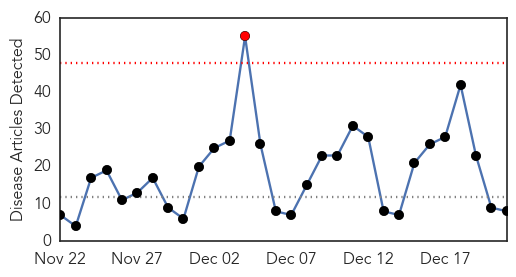
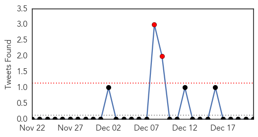
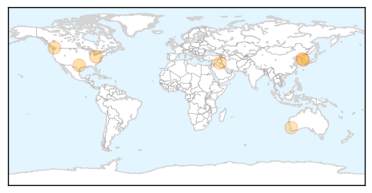
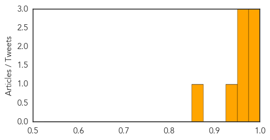

Toggle navigation
Early Warning
Daily Alerts
Influenza
Dec 21, 2014
Compare to:
-
Dengue Fever
Hemmorhagic Fever
Mold/Fungal Infection
Meningitis
Pertussis / Whooping Cough
Middle East Respiratory Syndrome
Cholera
Hepatitis
Chikungunya
Yellow Fever
Bubonic Plague
West Nile Virus
Swine Flu
Ebola
Measles
Unknown
Mumps
30 Day Trends
Web: 1
alerts
, 0
warnings
Twitter: 2
alerts
, 0
warnings
Top Articles:
0.999
Wave of flu across Ohio not hitting locally - WeirtonDailyTimes.com
0.997
Influenza prompting restrictions at hospitals
0.994
Holiday season also is flu season
0.965
Virus infecting B.C. poultry a North American first
0.959
South Korea halts U.S. poultry imports due to bird flu in U.S.
0.953
South Korea halts U.S. poultry imports due to bird flu in U.S.
0.943
South Korea halts U.S. poultry imports due to bird flu in U.S.
0.853
Perth County Report Flu Cases
Top Tweets:
No tweets found for Dec 21, 2014
Web/News Articles

Tweets

Article Locations

Article Confidences
